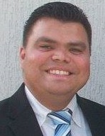

Hello guys! My name is Carlos. The degree I'm pursuing is a Bachelor of Applied Technology.
I'm from Venezuela, but have been living in southern Brazil for the last three years. I'm currently working as the Night Auditor in a hotel, and I'm transitioning into the programming field. I plan is to start applying for entry-level jobs in the first months of 2023.
Since I was a kid, I had the desire of studying at an American university, even though I was not a member of the church, and I didn't speak any English. When I first knew about the Pathway program and the possibility of enrolling at BYU Idaho as an online student, I can simply say that words can not express my excitement. I even wanted to go to Colombia, complete the one-year course, and then go back to Venezuela already as an online student, to continue studying in my country. I think it transpired only one year before the Pathway program was opened in Venezuela, near the city I was living in at the time.
One of the advantages that I see in the IT world, is that you can work remotely. I absolutely love that. My goal is to start working in this field by next year, gain some experience, and then start working as an independent contractor with American companies.
A phrase that I love is “sacrifice brings forth the blessings of heaven,” from the hymn Praise to the Man. I understand that something of great worth will not come easily.